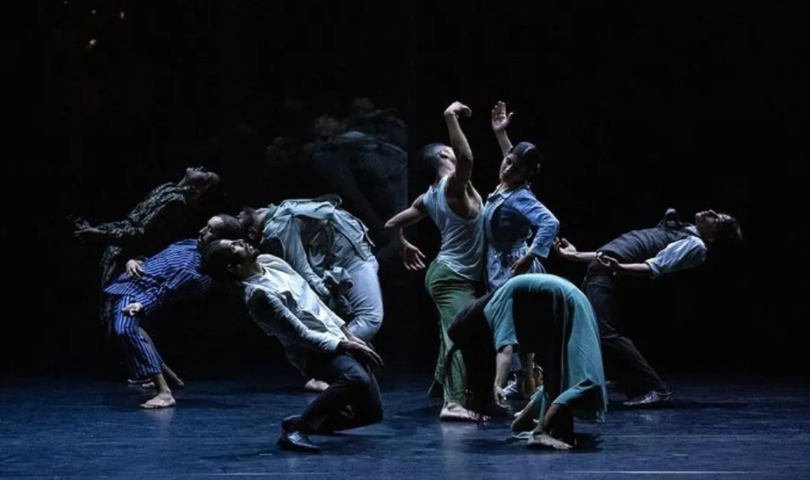

Greece
1. Dance Days Chania Festival

Image Source
"As sites of artistic and social expression, festivals offer a space for exchange and transnational relations that makes them effective instruments of diplomacy" -Olga Kolokytha
Description
Dance Days Chania is a vibrant contemporary dance festival held annually in the city of Chania, located on the island of Crete, Greece. The festival stands as a testament to the city's commitment to cultural expression, artistic innovation, and community engagement. Beyond traditional performances, Dance Days Chania encompasses a diverse range of events, including workshops, seminars, and site-specific projects. This multifaceted approach positions the festival as more than just a showcase of dance; it becomes a dynamic cultural experience that invites active participation and fosters a sense of community.
Dance Days Chania: A Cosmopolitan Endeavor in Regional Greece
Contextualizing Cultural Diplomacy in Greece:
Traditionally, cultural diplomacy in Greece has been orchestrated by state or state-supervised bodies, with the Ministry of Foreign Affairs, cultural organizations, museums, and the Greek Tourism Organization taking center stage. However, a bottom-up approach to cultural diplomacy has emerged, involving tourists, the Greek diaspora, cosmopolitan Greeks, and grassroots mobilization that emphasized Greek cultural values during the financial crisis.
Dance Days Chania is presented as a cultural diplomacy actor, changing perceptions of the geographical periphery and associating the city with contemporary culture. The festival is portrayed as an organic cultural diplomacy paradigm that evolves through the active participation of citizens. This emphasizes a bottom-up approach, deviating from a top-down projection of national cultural representations.
The engagement of citizens in cultural diplomacy activities not only enhances the festival's impact but also aligns with the idea of fostering a cosmopolitan ethos, where diverse voices and perspectives are acknowledged and celebrated.
In Kolokyth’s article, Bottom-up cultural diplomacy in the Greek periphery: The city of Chania and Dance Days Chania festival, she emphasizes the cosmopolitan aspect of art festivals, by stating that non-professional audience for arts festivals see elements of encounter, dialogue and exchange in arts festivals and distinguish four components of cosmopolitan relationships in them, namely shared normative culture, positive recognition of the other, the relativisation of one’s own identity, and the mutual evaluation of cultures.
Periphery Cities in Cultural Diplomacy
Greek cities in the periphery have not historically been actively engaged in cultural diplomacy. Often characterized by introverted, locally focused strategies, smaller cities have, however, seen a rise in festivals, becoming platforms for cultural expression with extra-local exposure. Examples include the Kalamata Dance Festival and the Renaissance Festival in Rethimno, highlighting the potential of regional cultural initiatives in shaping the image of cities.
Chania's Cultural Landscape and Historical Significance
Chania, with approximately 100,000 inhabitants, stands as a historic city in Crete, rich in cultural heritage shaped by various civilizations. Historically dominated by archaeological sites and museums, the promotion of culture has leaned heavily on local traditions and folklore. Despite limited opportunities for international productions, Chania has a history of contemporary dance festivals, laying the groundwork for Dance Days Chania.
Origins and Mission of Dance Days Chania:
Emerging in 2011 from a tradition of contemporary dance festivals, Dance Days Chania responded to the financial crisis by providing a platform for artistic exchange amid resource constraints. The festival's mission, as articulated by the artistic director, was twofold: to encourage artistic exchanges among local and international artists and to decentralize contemporary dance, making it accessible to the local audience.
Team and Volunteer-Driven Collective Approach:
The festival operates with a dedicated team comprising an artistic director, production manager, workshops manager, and numerous volunteers. Rooted in a dance association, the collective approach, fueled by the passion of volunteers, contributes to the festival's success. Volunteerism, a common phenomenon in Greek cultural events, aligns with a societal shift in values during the crisis and fosters connections with the local community.
Inclusive Methodology and Collaborative Programming
Dance Days Chania adopts an open call for entries, allowing applications to shape its programming annually. Selections are made by a diverse panel, including professionals, amateurs, educators, and representatives of the local audience and community. The festival's methodology incorporates social, economic, and political themes, creating a dynamic reflection of the issues prevalent in the contemporary context.
Volunteerism and Social Integration
The festival explicitly acknowledges the role of volunteers, emphasizing collaboration and co-creation. Volunteerism in cultural events reflects a positive societal shift during the crisis, highlighting a sense of shared responsibility. Volunteers contribute to various festival activities, fostering community engagement and providing them with free access to performances and events.
Open Call and Cultural Exchange
Dance Days Chania's reliance on an open call for entries underscores its commitment to inclusivity and diversity. This approach ensures a broad representation of social, economic, and political perspectives. The festival becomes a platform for cultural exchange, inviting artists from various backgrounds, aligning with cosmopolitan ideals of embracing diversity and fostering mutual understanding.
Impact on Local and Global Audiences
The festival's programming, influenced by factors such as venue availability and the cultural context of the region, ensures that Dance Days Chania aligns with the high-season cultural events in regional Greece, attracting both local and international audiences. Its success is intertwined with tourism, creating a symbiotic relationship between cultural events, audiences, and the city's image.
Conclusion
Dance Days Chania serves as a beacon of cosmopolitanism in regional Greece, challenging the traditional top-down cultural diplomacy models. Its inclusive methodology, reliance on volunteers, open programming approach, and impact on both local and global audiences showcase how a contemporary dance festival can become a powerful cultural diplomacy tool. By providing a platform for artistic exchange, fostering community engagement, and embracing diverse perspectives, Dance Days Chania contributes to shaping a cosmopolitan narrative for Chania, bridging the gap between regional cultural initiatives and international cultural exchange.
More